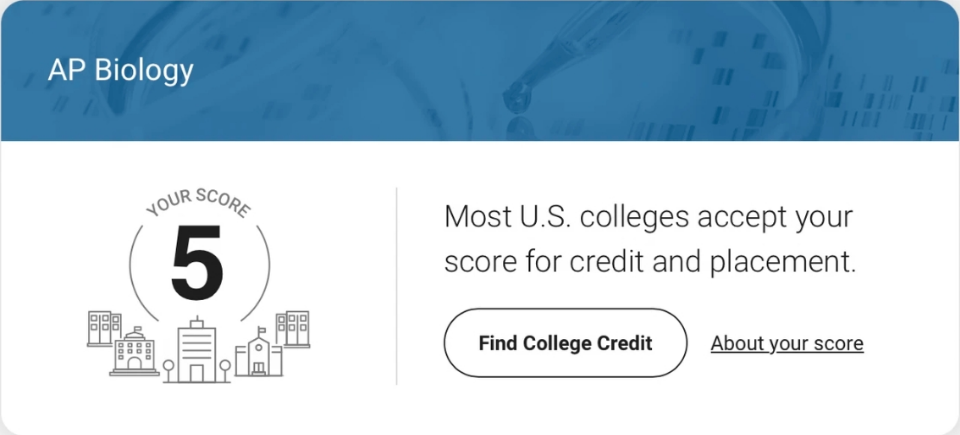

AP BIOLOGY · COURSE OVERVIEW
Builds the chemistry foundation for biology — the structure and function of water, elements, and biological macromolecules.
Focuses on cell structure and function — especially membrane structure and transport mechanisms.
How cells acquire and use energy — enzymes, photosynthesis, and cellular respiration.
How cells receive and respond to signals, and how they divide and regulate the cell cycle.
How genetic information is transmitted — from meiosis to Mendelian genetics.
Molecular-level study of how DNA is replicated, transcribed, translated, and regulated.
The course's central thread — the mechanisms and evidence of evolution.
Interactions between organisms and their environment — from individuals to ecosystems.
College Board Course and Exam Description